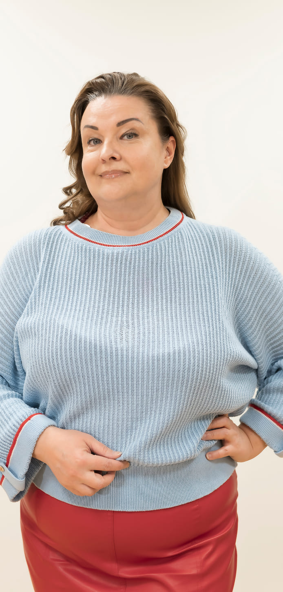

Олег Герасимов
Инженер по энергетическим процессам
Евгений Гусев
Инженер по эксплуатации и обслуживанию транспорта
Евгений Ивкин
Ведущий инженер-механик
Татьяна Кобаненко
Супервайзер отдела по документообороту в регионах
Александр Кузнецов
Начальник цеха розлива

Игорь Кузнецов
Главный энергетик
Галина Кутень
Ведущий специалист по информационным технологиям
Вячеслав Макаров
Старший инженер-механик цеха розлива
Анжела Мерзлякова
Старший технолог цеха пивопроизводства
Алексей Моисеев
Начальник смены склада
готовой продукции
готовой продукции
Наталья Моисеева
Специалист по учету складской
логистики
логистики
Владислав Мохов
Руководитель группы
эксплуатации и обслуживания
транспорта
эксплуатации и обслуживания
транспорта
Евгений Осиянцев
Ведущий специалист по защите активов
Владимир Сиделёв
Ведущий инженер по АСУП и комплектации

Татьяна Шенкевич
Специалист по
вспомогательным операциям
цеха пивопроизводства
вспомогательным операциям
цеха пивопроизводства
Михаил Юматов
Дивизиональный менеджер по обучению и развитию
Олег Герасимов
Инженер по энергетическим процессам
Отвечаю за поставку энергоресурсов на завод
— С момента начала строительства завода было много интересных событий. Мне
больше всего запомнилось, как грузили первую машину с грунтом, когда начали копать
котлован под фундамент завода, как ставили первые ЦКТ. Тогда я возглавлял группу
по подготовке площадки будущего завода к строительству — зачищали
территорию участка, согласовывали подведение воды, электричества и пара.
В день, когда мы с генеральным подрядчиком подписали договор о строительстве, решили зафиксировать этот момент на фото. Техника уже была наготове. В ознаменование подписания договора отправили в чистое поле экскаватор, который зачерпнул первый ковш грунта и погрузил его в самосвал. Фотографировал я. Было это 16 февраля 2007 года.
А установка ЦКТ — это, наверное, самый эффектный кадр в моем архиве строительства завода. Эти огромные конструкции везли к нам сначала морем, потом тяжеловозами доставляли на строительную площадку. Я бы сравнил масштабы этого оборудования с космическими кораблями — так это было мощно и впечатляюще. Уже когда установили все бродильные танки, над ними начали возводить крышу нынешнего цеха пивопроизводства. Конечно, когда все это вспоминаешь и когда видишь, какой огромный завод сейчас работает в Новосибирске, — испытываешь настоящую гордость за людей и за компанию, в которой работаешь.
В день, когда мы с генеральным подрядчиком подписали договор о строительстве, решили зафиксировать этот момент на фото. Техника уже была наготове. В ознаменование подписания договора отправили в чистое поле экскаватор, который зачерпнул первый ковш грунта и погрузил его в самосвал. Фотографировал я. Было это 16 февраля 2007 года.
А установка ЦКТ — это, наверное, самый эффектный кадр в моем архиве строительства завода. Эти огромные конструкции везли к нам сначала морем, потом тяжеловозами доставляли на строительную площадку. Я бы сравнил масштабы этого оборудования с космическими кораблями — так это было мощно и впечатляюще. Уже когда установили все бродильные танки, над ними начали возводить крышу нынешнего цеха пивопроизводства. Конечно, когда все это вспоминаешь и когда видишь, какой огромный завод сейчас работает в Новосибирске, — испытываешь настоящую гордость за людей и за компанию, в которой работаешь.
Все фотографии проекта смотри
в юбилейном фотоальбоме
в юбилейном фотоальбоме
Евгений Гусев
Инженер по эксплуатации и обслуживанию транспорта
Отвечаю за безопасность
— Я присоединился к «Балтике» с января 2016 года.
Для меня работа здесь началась с Кубка Гагарина. Я хоккейный болельщик, слежу
за календарем игр, с удовольствием смотрю все матчи, в которых выступает
сборная России. Когда пришел в коллектив службы логистики, понял, что
сработаемся — коллеги тоже болеют, а некоторые и играют в хоккей.
И так удачно сложилось, что в это время наша «Балтика 3» была партнером КХЛ. Как раз в феврале 2016 года при поддержке «тройки» был организован грандиозный тур Кубка Гагарина по городам России. И главный трофей КХЛ привезли на завод!
Честно говоря, я был поражен такой грандиозной возможностью — посмотреть вблизи на всю эту красоту, которую держали в руках наши великие хоккеисты! Так что эта фотография, на которой мы с коллегами вместе стоим вокруг Кубка Гагарина, для меня как талисман. Она висит у меня на рабочем месте и каждый день напоминает о том, что я работаю в замечательной компании. Надеюсь, что впереди у нас еще много таких ярких моментов!
И так удачно сложилось, что в это время наша «Балтика 3» была партнером КХЛ. Как раз в феврале 2016 года при поддержке «тройки» был организован грандиозный тур Кубка Гагарина по городам России. И главный трофей КХЛ привезли на завод!
Честно говоря, я был поражен такой грандиозной возможностью — посмотреть вблизи на всю эту красоту, которую держали в руках наши великие хоккеисты! Так что эта фотография, на которой мы с коллегами вместе стоим вокруг Кубка Гагарина, для меня как талисман. Она висит у меня на рабочем месте и каждый день напоминает о том, что я работаю в замечательной компании. Надеюсь, что впереди у нас еще много таких ярких моментов!
Все фотографии проекта смотри
в юбилейном фотоальбоме
в юбилейном фотоальбоме
Евгений Ивкин
Ведущий инженер-механик
Отвечаю за водоснабжение и отведение производственных стоков
на филиале
— Я пришел на «Балтику» в 2007 году на должность
инженера-механика. Через пять лет стал ведущим инженером-механиком.
В 2014 году меня назначали курировать «Строительство биологических очистных сооружений». Это очень ответственный проект — он позволил существенно сократить выбросы в окружающую среду и попутно получать биогаз, который мы используем на нашей котельной. В нем мы использовали все наработки компании по эксплуатации очистных сооружений на других филиалах.
В 2016 году сделали проектирование, на следующий год началась стройка в ударном темпе, а в 2019-м запустили комплекс в эксплуатацию. Самое волнительное было смотреть, как с каждым моментом из земли поднимались стены, возводились резервуары. А как растет метанореактор — сердце очистных сооружений — это завораживающее зрелище! Его высота составляет 24 метра в собранном виде.
В 2014 году меня назначали курировать «Строительство биологических очистных сооружений». Это очень ответственный проект — он позволил существенно сократить выбросы в окружающую среду и попутно получать биогаз, который мы используем на нашей котельной. В нем мы использовали все наработки компании по эксплуатации очистных сооружений на других филиалах.
В 2016 году сделали проектирование, на следующий год началась стройка в ударном темпе, а в 2019-м запустили комплекс в эксплуатацию. Самое волнительное было смотреть, как с каждым моментом из земли поднимались стены, возводились резервуары. А как растет метанореактор — сердце очистных сооружений — это завораживающее зрелище! Его высота составляет 24 метра в собранном виде.
Все фотографии проекта смотри
в юбилейном фотоальбоме
в юбилейном фотоальбоме
Татьяна Кобаненко
Супервайзер отдела по документообороту в регионах
Отвечаю за эффективную и качественную работу отдела
документооборота на заводе
— Сбытовое подразделение «Балтики» в Новосибирске открылось
в 1998 году. Я пришла в него техником по учету, когда оно только
создавалось. В 2003 году компания начала строительство собственного складского
терминала.
Мы «росли» вместе с компанией. Когда в 2007 году возводили завод, я уже исполняла обязанности главного бухгалтера. Как сейчас помню, первый производственный отчет (когда начались пробные варки) мы закрывали ночами. Опыт только нарабатывали, приходилось учиться новым процессам.
В мае 2008 года готовились к запуску завода дружной командой — наводили лоск в помещениях. На открытии было много гостей, поэтому мы стали даже экскурсоводами. Мне, как человеку цифр, было сложно запомнить текст экскурсии, но с задачей справилась достойно.
Одним из ярких событий того года стало солнечное затмение 2 августа. Мы как раз сдавали отчет, но нашли минутку выйти на крышу главного АБК и понаблюдать за этим восхитительным явлением природы.
Самое главное, что мой родной завод не стоит на месте! Каждый год появляются новые проекты. Смотрю на это с гордостью! Мне повезло работать с замечательными людьми, которые любят свое дело и преданно ему служат.
Мы «росли» вместе с компанией. Когда в 2007 году возводили завод, я уже исполняла обязанности главного бухгалтера. Как сейчас помню, первый производственный отчет (когда начались пробные варки) мы закрывали ночами. Опыт только нарабатывали, приходилось учиться новым процессам.
В мае 2008 года готовились к запуску завода дружной командой — наводили лоск в помещениях. На открытии было много гостей, поэтому мы стали даже экскурсоводами. Мне, как человеку цифр, было сложно запомнить текст экскурсии, но с задачей справилась достойно.
Одним из ярких событий того года стало солнечное затмение 2 августа. Мы как раз сдавали отчет, но нашли минутку выйти на крышу главного АБК и понаблюдать за этим восхитительным явлением природы.
Самое главное, что мой родной завод не стоит на месте! Каждый год появляются новые проекты. Смотрю на это с гордостью! Мне повезло работать с замечательными людьми, которые любят свое дело и преданно ему служат.
Все фотографии проекта смотри
в юбилейном фотоальбоме
в юбилейном фотоальбоме
Александр Кузнецов
Начальник цеха розлива
Отвечаю за розлив пива
— Я работаю на заводе с апреля 2008 года —
с момента, когда начали запускать новые производственные линии. Это очень интересный
и интенсивный процесс, правда, местами непонятный. Новое оборудование приходилось
осваивать прямо на месте, консультироваться с иностранными специалистами, которые
работали на запуске.
Мы «росли» вместе с компанией. Когда в 2007 году возводили завод, я уже исполняла обязанности главного бухгалтера. Как сейчас помню, первый производственный отчет (когда начались пробные варки) мы закрывали ночами. Опыт только нарабатывали, приходилось учиться новым процессам.
Я проработал техником-технологом в розливе два месяца. Потом стал мастером, еще через год — начальником смены. А с 2014 года — начальником всего цеха.
Ни разу не думал о смене работы, потому что «Балтика» — лучшее место на земле. Во-первых, является лидером в российском пивоварении, и я горжусь, что я часть компании. За последние три года наш завод начал выпускать практически всю линейку «Балтики». Во-вторых, компания дает стабильность и социальные гарантии.
На «Балтике» огромное внимание уделяется безопасности. Когда я работал начальником смены, на заводе были созданы внештатные аварийно-спасательные формирования. В случае выброса аммиака они должны были до приезда бригады МЧС приступить к ликвидации аварии. Я был участником такого формирования: мы постоянно проходили учения, совершенствовались. Хорошо, что эти умения так и не пригодились.
Мы «росли» вместе с компанией. Когда в 2007 году возводили завод, я уже исполняла обязанности главного бухгалтера. Как сейчас помню, первый производственный отчет (когда начались пробные варки) мы закрывали ночами. Опыт только нарабатывали, приходилось учиться новым процессам.
Я проработал техником-технологом в розливе два месяца. Потом стал мастером, еще через год — начальником смены. А с 2014 года — начальником всего цеха.
Ни разу не думал о смене работы, потому что «Балтика» — лучшее место на земле. Во-первых, является лидером в российском пивоварении, и я горжусь, что я часть компании. За последние три года наш завод начал выпускать практически всю линейку «Балтики». Во-вторых, компания дает стабильность и социальные гарантии.
На «Балтике» огромное внимание уделяется безопасности. Когда я работал начальником смены, на заводе были созданы внештатные аварийно-спасательные формирования. В случае выброса аммиака они должны были до приезда бригады МЧС приступить к ликвидации аварии. Я был участником такого формирования: мы постоянно проходили учения, совершенствовались. Хорошо, что эти умения так и не пригодились.
Все фотографии проекта смотри
в юбилейном фотоальбоме
в юбилейном фотоальбоме
Игорь Кузнецов
Главный энергетик
Отвечаю за энергоснабжение всего предприятия
— Я пришел на «Балтику» в 2007 году на должность
инженера-механика энергослужбы. В 2011 году меня назначили ведущим
инженером-энергетиком — я полностью отвечал за запуск котельной. Это
был очень ответственный инвестиционный проект. Всё как в сказке — огонь,
вода и медные трубы!
До того времени завод получал пар как субабонент соседнего предприятия. А чтобы гарантировать стабильность работы завода, нужен был свой пар. Проект мы реализовали за 10 месяцев. Котлы привезли к нам из Ярославля и Тулы. Разгрузка, конечно, была эффектная.
Первый розжиг котла был на дизельном топливе в сентябре, пока нам тянули газопровод. И только потом котельную подключили к газовой трубе. Пока шел монтаж оборудования, формировалась наша команда. Ребята ездили перенимать опыт у коллег в Самаре.
В конце 2011 года запустили котельную в тестовом режиме, а летом 2012-го было официальное открытие с телекамерами и высокими гостями. Проект позволил нашему филиалу подняться на новый уровень и с гордостью носить высокое звание предприятия с высокими экологическими стандартами. Сейчас приятно вспомнить какие-то секреты организации этой торжественной церемонии, о которых знали только мы, стоявшие за «красной кнопкой».
До того времени завод получал пар как субабонент соседнего предприятия. А чтобы гарантировать стабильность работы завода, нужен был свой пар. Проект мы реализовали за 10 месяцев. Котлы привезли к нам из Ярославля и Тулы. Разгрузка, конечно, была эффектная.
Первый розжиг котла был на дизельном топливе в сентябре, пока нам тянули газопровод. И только потом котельную подключили к газовой трубе. Пока шел монтаж оборудования, формировалась наша команда. Ребята ездили перенимать опыт у коллег в Самаре.
В конце 2011 года запустили котельную в тестовом режиме, а летом 2012-го было официальное открытие с телекамерами и высокими гостями. Проект позволил нашему филиалу подняться на новый уровень и с гордостью носить высокое звание предприятия с высокими экологическими стандартами. Сейчас приятно вспомнить какие-то секреты организации этой торжественной церемонии, о которых знали только мы, стоявшие за «красной кнопкой».
Все фотографии проекта смотри
в юбилейном фотоальбоме
в юбилейном фотоальбоме
Галина Кутень
Ведущий специалист по информационным технологиям
Отвечаю за оперативные решения проблем сотрудников в учетных
системах
— «Балтика» — надежный работодатель, компания
с громким именем и хорошим имиджем. Меня радует ее отношение
к сотрудникам и клиентам, которое я вижу изнутри.
«Балтика» идет в ногу со временем, поэтому никакого застоя я не ощущаю. В частности, я говорю о моей профессиональной области — учетные системы обновляются, задачи меняются, поэтому работать интересно. Я чувствую значимость своей работы.
Первый розжиг котла был на дизельном топливе в сентябре, пока нам тянули газопровод. И только потом котельную подключили к газовой трубе. Пока шел монтаж оборудования, формировалась наша команда. Ребята ездили перенимать опыт у коллег в Самаре. На нашем предприятии собрались очень заряженные люди. Особенно это ощущалось, когда завод только открылся. Мы с коллегами проводили много корпоративных выездов, причем формат всегда был разный. Субботники, пикники, даже зимняя рыбалка с «Сибирским бочонком»! Получили много положительных эмоций на всю жизнь.
«Балтика» идет в ногу со временем, поэтому никакого застоя я не ощущаю. В частности, я говорю о моей профессиональной области — учетные системы обновляются, задачи меняются, поэтому работать интересно. Я чувствую значимость своей работы.
Первый розжиг котла был на дизельном топливе в сентябре, пока нам тянули газопровод. И только потом котельную подключили к газовой трубе. Пока шел монтаж оборудования, формировалась наша команда. Ребята ездили перенимать опыт у коллег в Самаре. На нашем предприятии собрались очень заряженные люди. Особенно это ощущалось, когда завод только открылся. Мы с коллегами проводили много корпоративных выездов, причем формат всегда был разный. Субботники, пикники, даже зимняя рыбалка с «Сибирским бочонком»! Получили много положительных эмоций на всю жизнь.
Все фотографии проекта смотри
в юбилейном фотоальбоме
в юбилейном фотоальбоме
Вячеслав Макаров
Старший инженер-механик цеха розлива
Отвечаю за бесперебойную работу оборудования
— Я устроился на «Балтику» в 2008 году. Моя зона
ответственности — плановый ремонт и содержание выдувных машин. За эти
годы ни разу всерьез не думал поменять работу. Ценю компанию за стабильность,
социальные гарантии, отличный коллектив. Мы очень близки с коллегами. Раньше
отдыхали вместе, ездили на природу. Кстати, на заводе также работает мой младший
брат Сергей — он устроился сюда почти сразу же после меня.
«Балтика» дает возможности и для самореализации. Например, мы с братом — воспитанники ДЮСШ «Ирмень», играли в футбол, побеждали на городских и областных соревнованиях. И продолжаем играть в футбол на «Балтике».
В 2008 году в Санкт-Петербурге организовали турнир «Кубок Балтики». Мы создали корпоративную команду и, абсолютно не сыгранные, толком даже не зная друг друга, поехали. В результате были в конце турнирной таблицы.
Потом много лет турнир не проводился, и возобновили его только в этом году. На этот раз мы показали прогресс: отыграли 5 игр и взяли бронзу. Даже успели погулять по Северной столице, съездить на экскурсию на завод «Балтики» в Санкт-Петербурге. Очень теплые воспоминания!
«Балтика» дает возможности и для самореализации. Например, мы с братом — воспитанники ДЮСШ «Ирмень», играли в футбол, побеждали на городских и областных соревнованиях. И продолжаем играть в футбол на «Балтике».
В 2008 году в Санкт-Петербурге организовали турнир «Кубок Балтики». Мы создали корпоративную команду и, абсолютно не сыгранные, толком даже не зная друг друга, поехали. В результате были в конце турнирной таблицы.
Потом много лет турнир не проводился, и возобновили его только в этом году. На этот раз мы показали прогресс: отыграли 5 игр и взяли бронзу. Даже успели погулять по Северной столице, съездить на экскурсию на завод «Балтики» в Санкт-Петербурге. Очень теплые воспоминания!
Все фотографии проекта смотри
в юбилейном фотоальбоме
в юбилейном фотоальбоме
Анжела Мерзлякова
Старший технолог цеха пивопроизводства
Отвечаю за качество пива
— Я пришла на завод технологом пивного производства 1-й категории,
устроилась вслед за бывшей коллегой перед открытием пивоварни. Интересно, что сначала
я подавала резюме через Интернет. Но отклика не дождалась. В течение
недели принесла резюме, напечатанное на бумаге, в отдел кадров. Буквально
на следующий день мне перезвонили: «Удивлены вашей настойчивостью,
приходите». Так я и устроилась!
Когда начала работать, пришлось многому учиться — спасибо старшим коллегам, которые мне помогали. За 15 лет я и сама не раз становилась наставником для новичков. Знания передавать приятно!
Еще «Балтика» дает возможность проявить себя в разных направлениях. Я пою с самого детства и сейчас продолжаю петь в поселковом клубе. Когда «Балтике» исполнилось 25 лет, проводили конкурс талантов. И меня отправили в Санкт-Петербург выступить на праздничной программе. Пела две песни: «Колечко обручальное» Кати Огонек и «Ромашки» Афины. И, конечно, гимн «Балтики»!
Когда начала работать, пришлось многому учиться — спасибо старшим коллегам, которые мне помогали. За 15 лет я и сама не раз становилась наставником для новичков. Знания передавать приятно!
Еще «Балтика» дает возможность проявить себя в разных направлениях. Я пою с самого детства и сейчас продолжаю петь в поселковом клубе. Когда «Балтике» исполнилось 25 лет, проводили конкурс талантов. И меня отправили в Санкт-Петербург выступить на праздничной программе. Пела две песни: «Колечко обручальное» Кати Огонек и «Ромашки» Афины. И, конечно, гимн «Балтики»!
Все фотографии проекта смотри
в юбилейном фотоальбоме
в юбилейном фотоальбоме
Алексей и Наталья
Моисеевы
Моисеевы
Начальник смены склада готовой продукции
Специалист по учету складской логистики
Специалист по учету складской логистики
Отвечаем за качественную приемку товаров цеха розлива и
отгрузку в торговые точки
— Мы работаем на «Балтике-Новосибирск» с самого
открытия. Более того, мы ждали старта набора персонала в компанию с таким
прославленным именем. Когда пришли на завод, были приятно удивлены: четко выстроенные
процессы, новое оборудование и системы, программное обеспечение, заботливое отношение
компании к сотрудникам. Всё на высоте!
Нам нравится то, что «Балтика» активно поддерживает экологические мероприятия и проводит собственные. Например, в 2015 году мы приняли участие в акции «Береги природу» от бренда «Сибирский бочонок». Всем волонтерам давали сосны и ели, чтобы мы могли самостоятельно высадить их в любом месте. Мы посадили 3 ели на собственном участке. Все прижились и радуют нас уже 8 лет.
Нам нравится то, что «Балтика» активно поддерживает экологические мероприятия и проводит собственные. Например, в 2015 году мы приняли участие в акции «Береги природу» от бренда «Сибирский бочонок». Всем волонтерам давали сосны и ели, чтобы мы могли самостоятельно высадить их в любом месте. Мы посадили 3 ели на собственном участке. Все прижились и радуют нас уже 8 лет.
Все фотографии проекта смотри
в юбилейном фотоальбоме
в юбилейном фотоальбоме
Владислав Мохов
Руководитель группы эксплуатации и обслуживания транспорта
Отвечаю за транспорт дивизиона «Сибирь — Дальний Восток»
— Я пришел в компанию начальником ремонтного участка.
За 15 лет вырос до руководителя группы эксплуатации и обслуживания
транспорта на территории от Новосибирска до Сахалина. Я отвечаю
и за транспорт для сотрудников, и за грузовые машины с товаром,
и за погрузчики, которые эксплуатируются на внутренних площадках.
На «Балтике» ценю коллектив. Мы настоящая команда, где каждый вовлечен в общее дело. Акция «Балтийский десант» тому подтверждение. Несколько раз в год сотрудники вне зависимости от уровня и специализации — высшее руководство, офис, производство — помогают торговым представителям «в полях». Группами по 3–4 человека мы выезжаем в торговые точки, моем холодильники, проверяем наличие запаса в магазинах, расставляем продукцию согласно планограммам.
Основная задача акции — помочь коммерческой службе. Но косвенно акция решает и другие задачи: мы знакомимся с коллегами, более детально узнаем, как работают подразделения, какие есть достижения и сложности. Это важно. Я был в десанте 7 раз, и каждый раз в разных точках. Очень интересно!
На «Балтике» ценю коллектив. Мы настоящая команда, где каждый вовлечен в общее дело. Акция «Балтийский десант» тому подтверждение. Несколько раз в год сотрудники вне зависимости от уровня и специализации — высшее руководство, офис, производство — помогают торговым представителям «в полях». Группами по 3–4 человека мы выезжаем в торговые точки, моем холодильники, проверяем наличие запаса в магазинах, расставляем продукцию согласно планограммам.
Основная задача акции — помочь коммерческой службе. Но косвенно акция решает и другие задачи: мы знакомимся с коллегами, более детально узнаем, как работают подразделения, какие есть достижения и сложности. Это важно. Я был в десанте 7 раз, и каждый раз в разных точках. Очень интересно!
Все фотографии проекта смотри
в юбилейном фотоальбоме
в юбилейном фотоальбоме
Евгений Осиянцев
Ведущий специалист по защите активов
Отвечаю за физическую защиту активов филиала
— Я устроился на «Балтику» в мае 2007 года, когда
строительство завода было в самом разгаре. Отвечал за всю техническую часть
установки охранных систем по периметру предприятия и организацию контроля доступа
в подразделения.
Конечно, за 15 лет было много интересного. Так, в сфере видеонаблюдения вместе со всем миром переходили с аналоговой системы на цифру. У нас сфера работы такая, что обо всем не расскажешь. Но особенно приятно, что наша система наблюдения стала важным инструментом контроля за соблюдением норм безопасности.
На фото запечатлен августовский день 2007 года. Тогда на строительную площадку приехали губернатор Новосибирской области и мэр Новосибирска, руководство компании: знакомились с ходом строительства. Этот снимок напоминает о том, каким впечатляющим событием было строительство нашего завода, но и о том, насколько важна «Балтика» для города.
В общем, могу с гордостью сказать, что я тоже строил «Балтику» в Новосибирске!
Конечно, за 15 лет было много интересного. Так, в сфере видеонаблюдения вместе со всем миром переходили с аналоговой системы на цифру. У нас сфера работы такая, что обо всем не расскажешь. Но особенно приятно, что наша система наблюдения стала важным инструментом контроля за соблюдением норм безопасности.
На фото запечатлен августовский день 2007 года. Тогда на строительную площадку приехали губернатор Новосибирской области и мэр Новосибирска, руководство компании: знакомились с ходом строительства. Этот снимок напоминает о том, каким впечатляющим событием было строительство нашего завода, но и о том, насколько важна «Балтика» для города.
В общем, могу с гордостью сказать, что я тоже строил «Балтику» в Новосибирске!
Все фотографии проекта смотри
в юбилейном фотоальбоме
в юбилейном фотоальбоме
Владимир Сиделёв
Ведущий инженер по АСУП и комплектации
Отвечаю за закупку запчастей на заводе

— Люблю работать там, где много интересных задач. «Балтика»
в моей жизни появилась не случайно. После окончания факультета летательных
аппаратов НГТУ я 10 лет проработал в авиации и оборонке. Потом
участвовал в строительстве пивоваренного завода «Красный Восток», где
проработал 5 лет. Когда услышал про «Балтику», поступил просто: приехал,
нашел главного инженера, в этот же день прошел собеседование с директором.
Этап стройки — живое творчество. Интересно было невероятно! Партнеры из Германии, с которыми проводили монтаж оборудования, очень удивлялись нашим креативным находкам. Например, как на КамАЗе-длинномере развозили дрожжевые танки прямо по технологической галерее ЦКТ. С немецкими коллегами мы общались совершенно без знания языка и ведь понимали друг друга. Потом, когда приняли переводчиков, стало проще.
За время работы завода было много интересных проектов. Одним из самых запоминающихся стал монтаж и запуск безалкогольной линии. Ее привезли с завода Санкт-Петербурга, а процесс монтажа был организован исключительно по фотографиям Сергея Замащикова. Так что проект потребовал очень высокой технической подготовки и буйной фантазии.
За всю мою карьеру команда «Балтики» — самая лучшая. Техники-технологи — личности творческие, с ними интересно работать. КИПовцы — просто фантастические специалисты! А своих механиков хвалить я могу долго и упорно — это самые лучшие профессионалы, с кем я когда-либо имел дело.
Этап стройки — живое творчество. Интересно было невероятно! Партнеры из Германии, с которыми проводили монтаж оборудования, очень удивлялись нашим креативным находкам. Например, как на КамАЗе-длинномере развозили дрожжевые танки прямо по технологической галерее ЦКТ. С немецкими коллегами мы общались совершенно без знания языка и ведь понимали друг друга. Потом, когда приняли переводчиков, стало проще.
За время работы завода было много интересных проектов. Одним из самых запоминающихся стал монтаж и запуск безалкогольной линии. Ее привезли с завода Санкт-Петербурга, а процесс монтажа был организован исключительно по фотографиям Сергея Замащикова. Так что проект потребовал очень высокой технической подготовки и буйной фантазии.
За всю мою карьеру команда «Балтики» — самая лучшая. Техники-технологи — личности творческие, с ними интересно работать. КИПовцы — просто фантастические специалисты! А своих механиков хвалить я могу долго и упорно — это самые лучшие профессионалы, с кем я когда-либо имел дело.
Все фотографии проекта смотри
в юбилейном фотоальбоме
в юбилейном фотоальбоме
Татьяна Шенкевич
Специалист по вспомогательным операциям цеха пивопроизводства
Отвечаю за обеспечение цеха всем необходимым
— Я работаю на «Балтике» с 2007 года. Все
процессы, которые происходят в цехе, я перевожу в цифры — веду
заказы, учет и списание сырья, готовлю методички для учета и аналитики потерь
и расхода материалов.
В выходные для меня особенно важно отвлечься и переключиться на активные действия. Поэтому, когда в 2008 году «Балтика» проводила первый в Новосибирске пивной фестиваль, я с удовольствием откликнулась на призыв войти в состав «Пивного дозора». Нашей задачей было распространить в шатрах наклейки с предупреждением о запрете продаж пива несовершеннолетним, проинструктировать продавцов и проследить за соблюдением этих правил.
Я хорошо помню тот насыщенный день! Помню, почти каждый посетитель хотел с нами сфотографироваться. Фразу: «Балтика», привет! Я пью только «Балтику», мы слышали от очень многих. А меня лично переполняла гордость и осознание нужности. И кстати, эти чувства не угасли до сих пор.
Потом был грандиозный концерт. Ближе к вечеру, изрядно уставшие, мы сидели за столом, общались, делились впечатлениями от праздника. Это было настолько душевно, как будто мы знаем друг друга сто лет. И это ощущение, когда коллеги — как часть одной большой семьи, всегда со мной.
В выходные для меня особенно важно отвлечься и переключиться на активные действия. Поэтому, когда в 2008 году «Балтика» проводила первый в Новосибирске пивной фестиваль, я с удовольствием откликнулась на призыв войти в состав «Пивного дозора». Нашей задачей было распространить в шатрах наклейки с предупреждением о запрете продаж пива несовершеннолетним, проинструктировать продавцов и проследить за соблюдением этих правил.
Я хорошо помню тот насыщенный день! Помню, почти каждый посетитель хотел с нами сфотографироваться. Фразу: «Балтика», привет! Я пью только «Балтику», мы слышали от очень многих. А меня лично переполняла гордость и осознание нужности. И кстати, эти чувства не угасли до сих пор.
Потом был грандиозный концерт. Ближе к вечеру, изрядно уставшие, мы сидели за столом, общались, делились впечатлениями от праздника. Это было настолько душевно, как будто мы знаем друг друга сто лет. И это ощущение, когда коллеги — как часть одной большой семьи, всегда со мной.
Все фотографии проекта смотри
в юбилейном фотоальбоме
в юбилейном фотоальбоме
Михаил Юматов
Дивизиональный менеджер по обучению и развитию
Отвечаю за обучение персонала
— До Новосибирска я работал в дивизионе «Юг»,
а в Сибирь переехал в 2018 году. Через год мы реализовали
уникальный проект — «Пивной сомелье». Пригласили топовых блогеров
и журналистов города и устроили для них дегустацию новинок прямо в бродильном
цехе под аккомпанемент джаз-банда. 25 человек, 5 сортов пива, очень необычная
локация. Я был ведущим мероприятия и коммуницировал с гостями.
Затем был ковидный период, который внес свои коррективы. Мы устроили дегустацию дистанционно: заранее отправили гостям новинки, памятки, брендированную кружку, а в назначенный день вышли в онлайн и презентовали напитки. Проводить мероприятие онлайн сложнее, ведь дистанционно считать эмоции не так просто.
Несмотря на это аудитория восприняла оба формата великолепно. Здорово, что на «Балтике» идеи всегда поддерживают и есть возможность реализовать подобные уникальные проекты!
Затем был ковидный период, который внес свои коррективы. Мы устроили дегустацию дистанционно: заранее отправили гостям новинки, памятки, брендированную кружку, а в назначенный день вышли в онлайн и презентовали напитки. Проводить мероприятие онлайн сложнее, ведь дистанционно считать эмоции не так просто.
Несмотря на это аудитория восприняла оба формата великолепно. Здорово, что на «Балтике» идеи всегда поддерживают и есть возможность реализовать подобные уникальные проекты!
Все фотографии проекта смотри
в юбилейном фотоальбоме
в юбилейном фотоальбоме